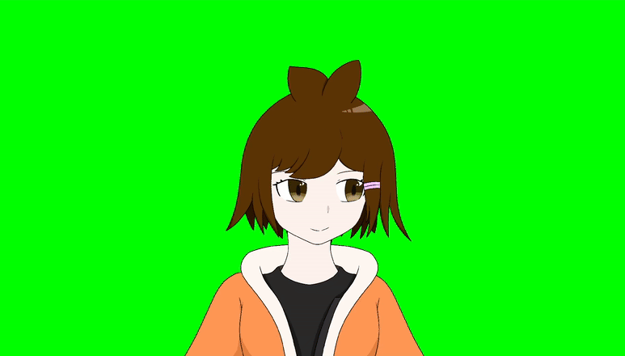
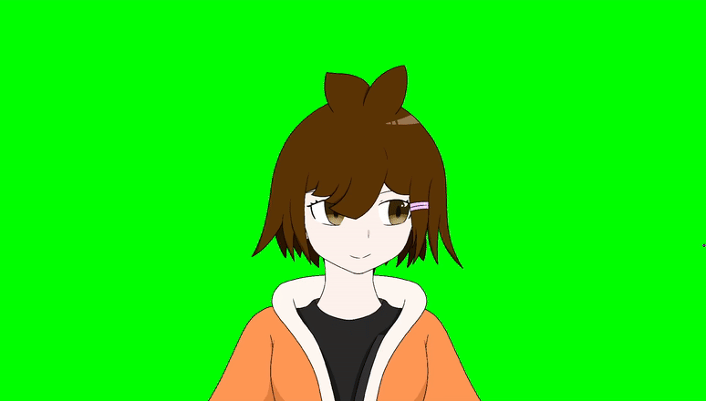
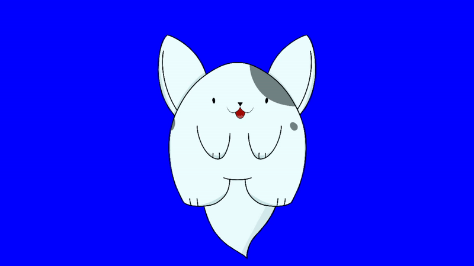
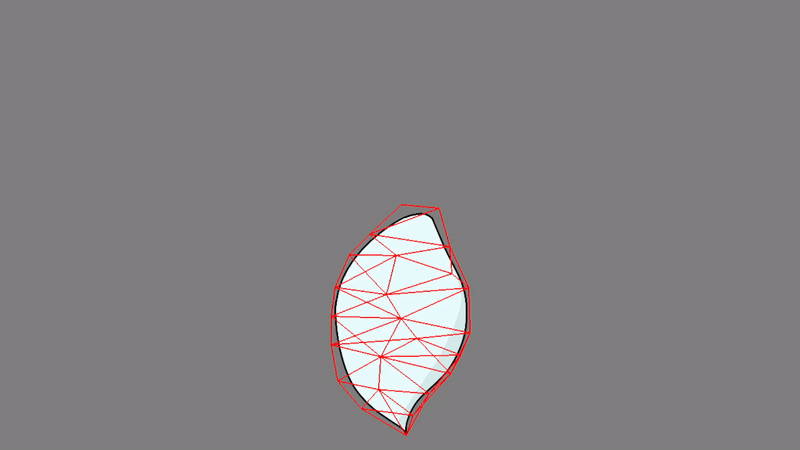

VTubasic
Hi! My name is Robbie, but I normally go by LucienZ on the internet. No matter how you got here, I welcome you!
I made a project that implements realtime puppet animation which follows your cursor. If you're lazy and don't want to read this whole thing or you just want to see it in action, I made a video detailing the specifics of this project that you can watch here:
If the embed doesn't load for whatever reason, you can find the video with this link.
Overview/Features
The basic idea of VTubasic was to create a simple VTuber runtime. I had initially planned for it to run actual Live2D models, but as it turns out, that would be pretty complicated since moc3 is a proprietary format
Main Features
Mouse Position Tracking
The program actively tracks mouse movement tied to different deformers. The program translates the current mouse position to normalised device coordinates which act as parameter inputs to the different position deformers.
Custom file format
To make things easier to debug, JSON was used for storing model information. While it isn't the most efficient space-wise, it made debugging the project a lot easier.
Position based dynamics
To simulate hair physics, this uses position based dynamics (PBD) with various vertices. Different spring constraints are specified between dynamic vertices to give a "jelly-like" appearance to the hair. This can also be added to clothes and other things that deform.
One important thing to note is that the physics are simulated on the CPU. While this doesn't necessarily pose a problem on a surface level, it means that a high amout of vertices may see a performance impact.
Texture based expressions and animations
Expressions are created by setting different texture offsets in the JSON config file. In addition to this, animations can be added by setting different texture offsets at certain timestamps.
Multiple model and background color support
The application supports multiple models and background colors to support characters that may have green on them.
Running the application
The program is built on python and requires some dependencies to be installed beforehand. The list of libraries used can be found in the libraries section.
pip install -r requirements.txt
The program can be run with the following:
python main.py
Application Controls
Runtime
wToggle drawing meshrReset physicszSet background to redxSet background to bluecSet background to green(0-9)Expressions
Editor
[Move back a layer]Move forward a layerclickAdd vertexzRemove the most recent vertex- This includes any existing vertices
rReset vertices to last loadd meshctrl-sOverwrites the loaded mesh with current mesh
Making your own model
I'd highly advise against this, but if you really want to suffer through the process then here's how to do it.
Models must be put in the /models directory. The structure of a model file is the following:
Directory Format
/deformers /meshes /textures config.json
Most of the directories and files are pretty self-explanatory, but just in case here's the
/deformers- Contains any information that might change the model. This includes things layer positioning, physics, etc...
/meshes- This is where the triangulation information for models go.
/textures- This is where images used by the model go.
config.json- Contains metadata about the model as well as the layer inforamation and transformation hierarchy.
- This is really the only required file for the model. Every other directory is more for organization.
If you're lazy, the program can create a default model for you. Simply run it and select "Create a new model from scratch"
Configuring the model
Setup
Firstly, textures must be added for anything to display. These can be any filetype supported by pygame. .png files are usually best.
WARNING: Textures must be the same aspect ration of the window, which is currently widescreen (16:9)
Secondly, a mesh must be added to for the texture. Meshes contain both vertex information and vertex coordinate info about a specific layer. It's usually easiest to use a square that spans the screen as a default. For example:
{
"triangles": [ 0, 1, 3, 0, 3, 2],
"vertices": [
{
"pos": [ -1.0, -1.0 ],
"texPos": [ 0.0, 0.0 ]
},
{
"pos": [ 1.0, -1.0 ],
"texPos": [ 1.0, 0.0 ]
},
{
"pos": [ -1.0, 1.0 ],
"texPos": [ 0.0, 1.0 ]
},
{
"pos": [ 1.0, 1.0 ],
"texPos": [ 1.0, 1.0 ]
},
{
"pos": [ 0.5, 0.0 ],
"texPos": [ 0.0, 0.0 ]
}
]
}
Finally, a config.json file should be created to specify the different files. As an example, here is the file that is automatically generated when using the program to make a model:
{
"name": "Default Configuration",
"expressions": [],
"parts": [
{
"name": "Body",
"texture": "textures/Body.png",
"mesh": "meshes/bodyMesh.json",
"deformers": [
"deformers/bodyPosition.json"
]
}
],
"hierarchy": {
"root": "Body",
"relations": {
"Body": []
}
}
}
Editing meshes
To edit a mesh, use the mesh editor when starting the app instead of the runtime. Click anywhere to add a vertex and the triangulation will be done automatically.
WARNING: Saving a mesh will override the currently loaded mesh. Make sure different layers have different meshes loaded.
Deformers
There are 3 main deformer types that can make realtime modifications to the model:
Position Deformers
These move a layer based on the position of the mouse. A full example is provided below:
{
"type": "position",
"bind": "mouse",
"xLowerBound": -0.006,
"xUpperBound": 0.006,
"yLowerBound": -0.012,
"yUpperBound": 0.025,
"xMin": -0.012,
"xMax": 0.012,
"yMin": -0.03,
"yMax": 0.03
}
The bounds parameters are used to determine how quickly much the mouse affects the position of a layer. The min and max parameters define hard limits on the position of the layer.
Cloth Deformers
These mutate different specified vertices based on spring constraints built by the triangles from the mesh. A full example is provided below:
{
"type": "cloth",
"dynamicVertices": [0, 1, 2, 3, 4, 5, 7, 8, 9, 10],
"alpha": 6e-4,
"damping": 5,
"gravity": 0.3,
"mass": 10.0,
"timeModifier": 0.5
}
Each vertex specified in dynamicVertices will have cloth physics applied to them. The other parameters can be adjusted to get a specific "look" to the physics.
Texture Animation Deformers
These changes the texture coordinates of a layer based on a specified timing. A full example is provided below:
{
"type": "textureAnimation",
"keyframes": [
[0.0, 0.0],
[0.0, -0.142],
[0.0, -0.284],
[0.0, -0.142]
],
"timing": [
0.0,
5.7,
5.8,
5.9
],
"durationSeconds": 6.0
}
Keyframes are different texture offsets for the texture. This means that they translate the texture from its current position.
The timing list is based on the duration of the animation itself. Ensure that this list is sorted chronologically with the keyframes.